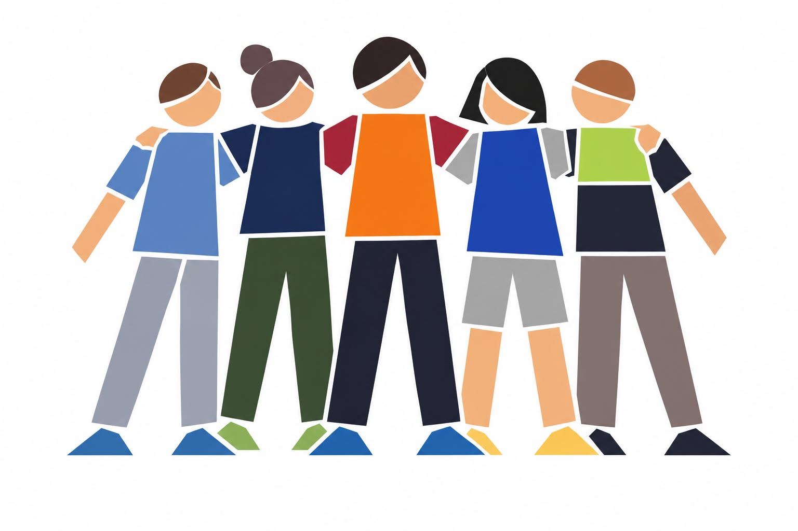

Nuestro Equipo

Detrás del Centro Cultural Molino del Galgo hay un equipo de voluntarios comprometidos con el bienestar y el desarrollo de cada niño y niña. Personas capacitadas que, desde diferentes roles y talleres, trabajan en conjunto para ofrecer un espacio seguro, de confianza y aprendizaje. A través del acompañamiento pedagógico, la escucha y la atención constante, buscan reconocer las necesidades de cada niño, fomentar su participación y brindarles nuevas experiencias. Cada integrante cumple un papel importante en este camino, aportando tiempo, dedicación y compromiso para que los niños puedan aprender, compartir, descubrir y crecer en un entorno donde se sientan acompañados y valorados. Porque en el Molino no se trata solamente de realizar actividades, sino de construir vínculos, generar oportunidades y hacer que cada niño encuentre su lugar.